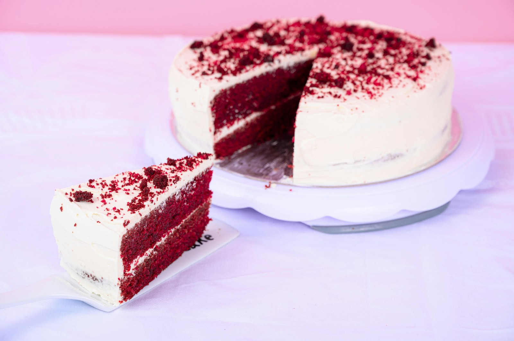
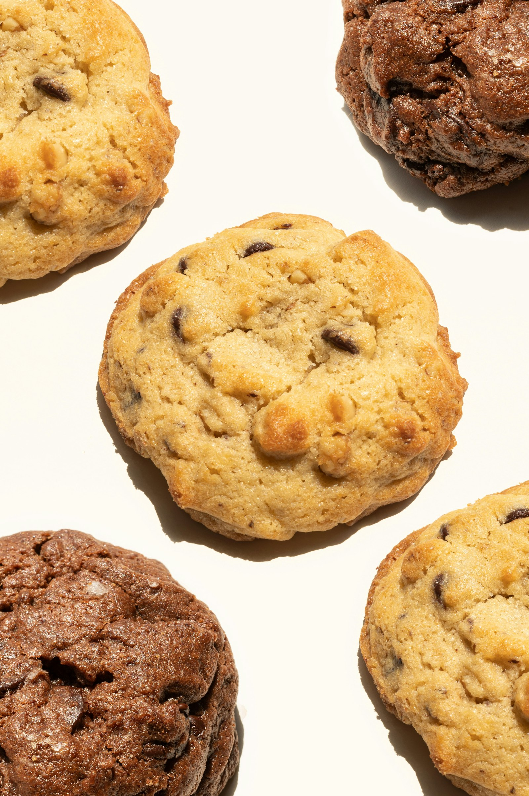

The Brown Butter Cookie
My base recipe. The one every cookie tin descends from. 280g cookies, 12 minutes at 175°C.
Vol. V · The Vault
A small, slowly growing library of my real eggless recipes. The ones on my counter at 6am. Ratios, technique notes, and the small things I learned the hard way. Inner Circle members get the key.
The library
+ 2 next month
My base recipe. The one every cookie tin descends from. 280g cookies, 12 minutes at 175°C.

The viral one, every layer broken down: brownie base, pistachio cream, the kunafa crisp on top.

The sponge formula that holds the three-milk soak without collapsing. Years of trial and error.

A 24-hour cold rest, crushed Biscoff folded in, a swirl of spread on top. The most-asked recipe at the studio.

The original ratio, not the food-colour bomb you find online. Cocoa-forward, with proper cream cheese frosting.

Very ripe bananas, brown butter, the technique that keeps it moist for five days. My favourite weeknight bake.
A taster (free, always)
Not a real cookie. A "I need something sweet right now" cookie. One bowl, one fork, microwave only.
Ingredients (makes 1)
Method
The real recipes in the vault use cultured butter, a 24-hour cold rest, and a 12-minute oven bake. This is the fun cousin.
Get the vault key
Plus the Inner Circle letter, early launches, and a small birthday surprise.